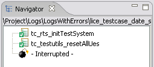
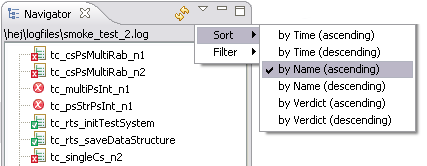
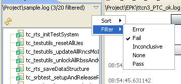

Extract Test Cases
The action Extract Test Cases is used to extract the log file
and find all test cases and verdicts included in the file. Each test case will
be displayed in the Test Case tab in the Navigator with a verdict
indicator and an associated name
-
Select a file with the extension log in the Navigator.
-
Select the action TITAN Log Viewer - Extract Test Cases in the pop-up
menu.
Double click or Enter can be used if the Default behaviour in Project
Tab in User Configuration - General Settings is set to
Extract Test Cases.
The log file is processed and the test cases are extracted.
The test cases will be displayed in the Test Case tab in the TITAN Log Viewer
Navigator with a verdict indicator and an associated name.
The log file timestamp format must be one of the following formats, "yyyy/mm/dd
hh:mm:ss.SSSSSS", "hh:mm:ss.SSSSSS" or "s.SSSSSS".
A test case starts when a record in the log file contains the strings "Test
Case" and "started" and ends when a record contains the strings
"Test case" and "finished".
The name of the test case is the first token in the start record after the
string "Test Case". A test case name can occur several times in
the same log file so each instance is unique identified with the date and
time stamp of the start event.
The verdict of the test case is the overall verdict of the test case and
is included in the finish record of the test case and is the first token
after the string "Verdict: ". If no verdict can be defined for the test
case the verdict indication will be set to  None.
None.
The verdicts are:
| Image |
Description |
 |
Error |
 |
Fail |
 |
Inconclusive |
|
None |
 |
Pass |
If an error occurrs during extracting the file, the extracting
will stop. All test cases that was extracted is shown in the Test Case tab and
an indication, Interrupted, is added to the list.

Sorting test cases
The test cases found in a log file can be sorted by time, name and verdict in the Test Cases tab.
To sort the test cases select the prefered sort type in the Sort menu group in the drop-down menu.
The drop-down menu is found in the Navigator at the upper right corner, when the Test Cases tab is selected.

Filtering test cases
The test cases listed in the test cases tab of the Navigator can be filtered.
Each type (error/fail/inconc/none/pass) can be filtered.
To filter the test cases select the prefered filter type in the Filter menu group in the drop-down menu.
The drop-down menu is found in the Navigator at the upper right corner, when the Test Cases tab is selected.
